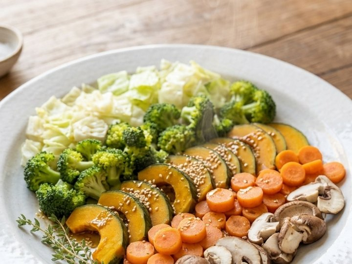

이 페이지는 쿠팡 파트너스 활동의 일환으로, 이에 따른 일정액의 수수료를 제공받습니다. 구매하시는 가격은 똑같습니다.

비비안의 건강한 살림
10분이면 되는 건강한 한 끼, 돈 아끼는 생활 지혜
AI로 만든 가상인물 · 실제 사용 후기가 아닙니다

새 영상 · 요리 1편
10분 아침 채소찜
영상에 나온 찜냄비·들기름과 재료 8가지를 한곳에 모았어요.
영상 속 재료·도구 보기 ↓🍲 요리 1편 · 10분 아침 채소찜 (2인분)
3번

퀸센스 다용도 찜냄비 28cm
영상 속 찜기 · 인덕션 겸용
별점 4.5 · 후기 4,821개
쿠팡에서 보기
별점 4.5 · 후기 4,821개
4번

전연화 들기름 300ml
드레싱 2큰술
별점 4.5 · 후기 2.5만 개
쿠팡에서 보기
별점 4.5 · 후기 2.5만 개
재료 · 누르면 쿠팡 상품으로 바로 가요

양배추
1/4통 사용
쿠팡 보기 ›

브로콜리
1/2송이 사용
쿠팡 보기 ›

단호박
1/4개 사용
쿠팡 보기 ›

당근
1/2개 사용
쿠팡 보기 ›

표고버섯
3개 사용
쿠팡 보기 ›

양조간장
드레싱 1큰술
쿠팡 보기 ›

사과식초
드레싱 1큰술
쿠팡 보기 ›

볶음참깨
마지막에 톡톡
쿠팡 보기 ›
① 썰기 채소를 모두 한입 크기로 썰어요.
② 찌기 물이 끓으면 단호박·당근 먼저 5분, 나머지를 넣고 5분 더.
③ 드레싱 들기름 2 · 간장 1 · 식초 1큰술을 섞어 두르고 참깨 톡톡.
② 찌기 물이 끓으면 단호박·당근 먼저 5분, 나머지를 넣고 5분 더.
③ 드레싱 들기름 2 · 간장 1 · 식초 1큰술을 섞어 두르고 참깨 톡톡.
지난 영상 속 제품